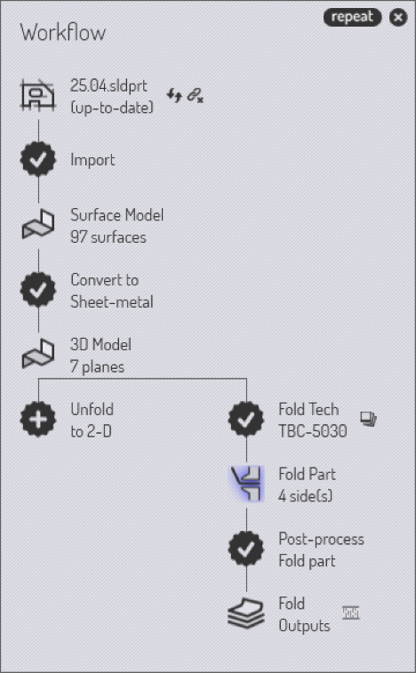
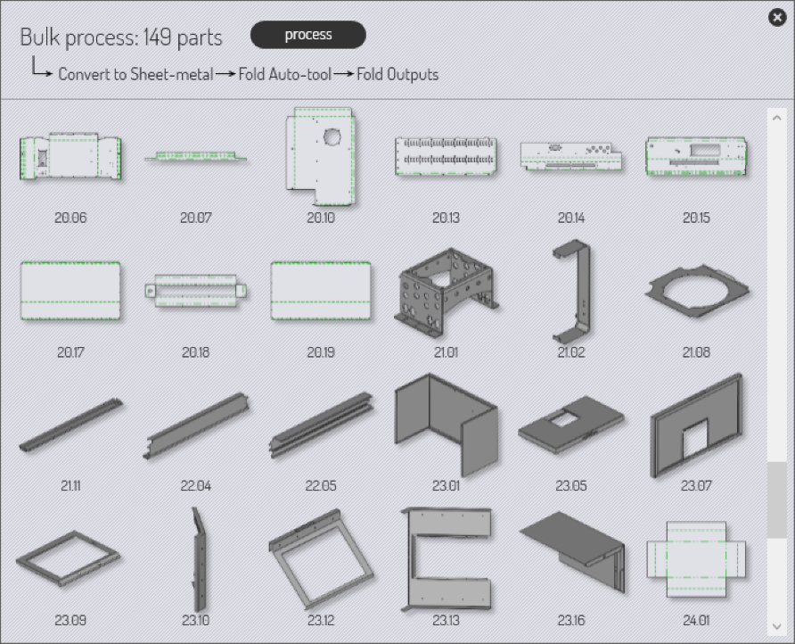

Batch processing

The workflow panel offers a powerful batch processing option that can be used to process a large number of parts with a similar workflow. These are the steps to batch-process a set of parts:
-
Open a number of parts that should be processed with a similar workflow (you can use the File → Open… command to open multiple parts - just select all the files you want to open, even if they are of different file types).
-
Use the workflow panel on any one of the parts, and process the part through all the way to generating outputs (there could be multiple outputs, for example a panel-bender program and a welding program).
-
When the outputs are generated for this part, a new button called repeat appears at the top right of the workflow panel. (This appears only if there are multiple parts open already).
-
Clicking on the repeat button brings up the Bulk process panel. This displays thumbnails of all the parts that are going to be processed, along with a brief summary of the batch processing operations that are going to be done on these parts.
-
The image below shows the thumbnails of the parts (some of these parts are loaded from 2D files, and some from 3D files). Click on the process button to apply the workflow to all the parts.
 -
After the processing is complete, the part thumbnails are updated:
-
Parts that are correctly processed are in gray.
-
Parts that were processed, but have some warnings that might require attention are shaded yellow (NC code is generated for these parts).
-
Parts that could not be fully processed are shaded red.
-
-
The image below shows the results after processing. Only some of the parts now require attention, and you can close all the perfectly completed parts by clicking on the Close Finished Parts link on the top-right of the bulk process window.